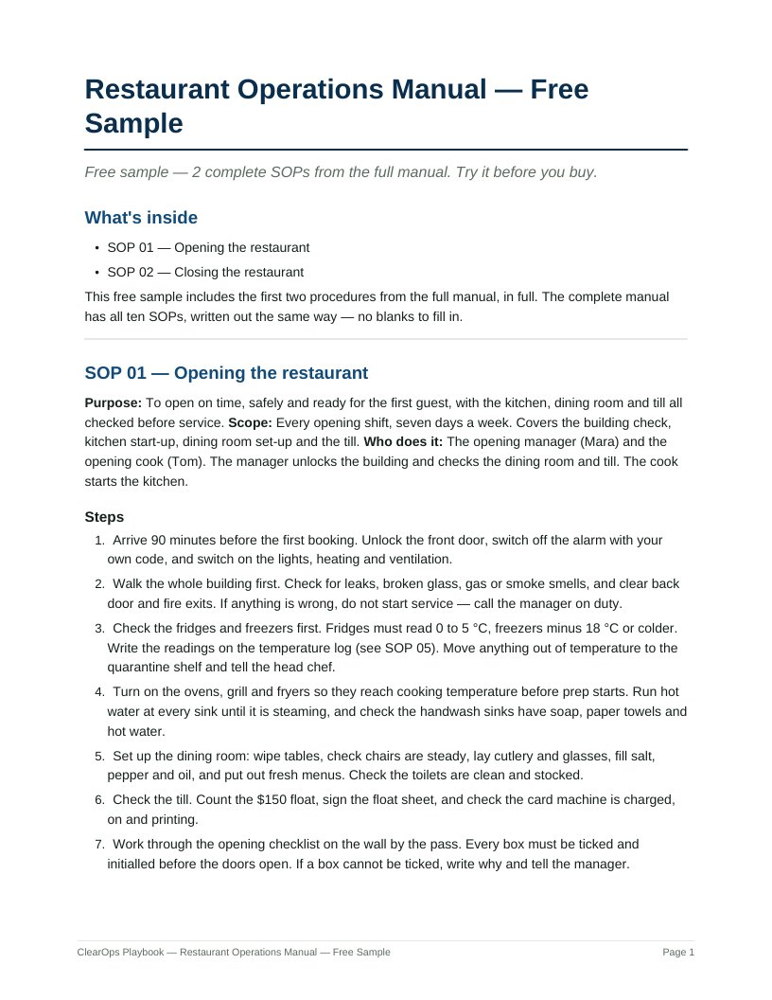

Restaurant
Restaurant Operations Manual
Ten ready-to-use procedures for a small independent restaurant — opening and closing, greeting guests, orders and allergy checks, food safety, hygiene, complaints, cash handling, handovers and cleaning. Written out in full for a 40-seat bistro, with real temperatures, checklists and what to do when things go wrong. No blanks to fill in.

Running a small restaurant means juggling a hundred small jobs every day, and when the person who knows how things are done is off sick or leaves, the whole place feels it. The Restaurant Operations Manual fixes that. It is a complete set of ten procedures written for a small independent restaurant, ready to print and hand to your team today.
There is nothing to fill in and nothing to work out — every step is written out in full, in plain English, using an example business, The Copper Kettle Bistro, a 40-seat neighbourhood bistro with eight staff. Swap in your own names and times and it fits your place. The manual starts where the day starts.
Opening the restaurant takes you through the building check, fridge temperatures, till float and the five-minute team huddle before the doors open. Closing the restaurant covers last orders, cooling and labelling leftovers, cashing up and the final lock-up walk-through. Between those two bookends are the procedures that make or break a service: greeting and seating guests, taking orders and asking the allergy question at every table, and handling a complaint so the guest leaves happy instead of angry.
Food safety is covered properly, not as a vague reminder. The fridge and temperature checks procedure gives the exact numbers — fridges between 0 and 5 °C, freezers at minus 18 °C or colder, chicken and minced meat cooked to 75 °C, hot food held above 63 °C — plus what to do when a fridge reads too warm and how to cool cooked food safely. The handwashing and hygiene procedure covers the 20-second wash, when to wash, what to do about cuts, jewellery and illness, including the 48-hour rule after vomiting or diarrhoea.
The allergy procedure lists all 14 main allergens and shows exactly how to record an allergy on the ticket and check it at the pass. The rest of the manual covers the money and the team: cash and card handling, with the float, the cash-up sheet and what to do when the till does not balance; shift handover, so nothing gets lost between lunch and dinner; and the cleaning schedule, with daily, weekly and monthly jobs plus the deep clean. Every procedure names who does it, gives numbered steps, a quality check, what to do when it goes wrong, and what records to keep.
Buy it once, print as many copies as you need for your own restaurant, and give every new starter the same clear answer to the question "how do we do this here?"
Watch the video
A quick look at the restaurant this pack was written for.
What's inside
- SOP 01 — Opening the restaurant
- SOP 02 — Closing the restaurant
- SOP 03 — Greeting and seating guests
- SOP 04 — Taking orders and allergy checks
- SOP 05 — Food safety — fridge and temperature checks
- SOP 06 — Handwashing and hygiene
- SOP 07 — Handling a complaint
- SOP 08 — Cash and card handling
- SOP 09 — Shift handover
- SOP 10 — Cleaning schedule and deep clean
- PDF version — print-ready, Letter size
- Word (.docx) version — editable
- Markdown (.md) version — plain-text source
Try the free version
The free version has SOP 01 and SOP 02 in full from this exact pack, in PDF, Word and Markdown. No sign-up, no email.
The full pack
The full pack has all 10 procedures in PDF, Word and Markdown. Checkout is being set up — the buy button will work soon. In the meantime, the free version above shows you exactly what the paid pack is like.
All sales of digital downloads are final. Please download the free version first and make sure this pack fits your business before you buy.